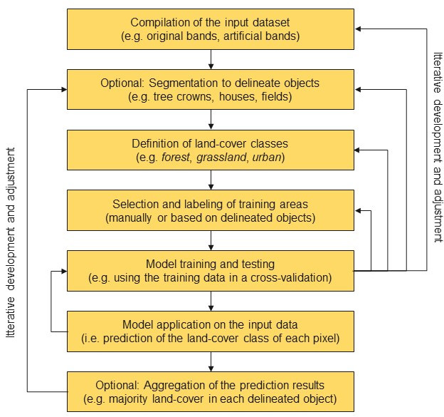

In den Geowissenschaften ist die Fernerkundung die einzige Messtechnik, die eine vollständige Abdeckung großer räumlicher Skalen ermöglicht. Zur Forschung gehört notwendigerweise auch die Entwicklung eigener Methoden, insbesondere im Hinblick auf die Verarbeitungsketten, aber auch in der Kopplung geeigneter und etablierter Methoden.
Ein zentraler Bestandteil der Umweltinformatik ist die Veränderungsdetektion mittels Satelliten-, Flugzeug- und Drohnenbildern. Oft wird dies in Verbindung mit bio- und geophysikalischen oder vom Menschen verursachten Prozessen genutzt, um ein tieferes Verständnis und die Möglichkeit zur Entwicklung von Vorhersagemodellen zu erhalten. Dabei sind Bildanalysemethoden von zentraler Bedeutung, um Informationen zu extrahieren, die es erlauben, die zugrunde liegenden Prozesse zu identifizieren. Ein immer wichtigerer Aspekt ist die Integration von Big Data-Analysen.
Die wachsende und jetzt schon überwältigende Flut an verfügbaren Bild- und Fernerkundungsdaten muss leicht zugänglich sein und sowohl für den wissenschaftlichen Erkenntnisgewinn als auch für gesellschaftliche Zukunftsaufgaben genutzt werden. Wir beginnen mit dieser praktischen Anwendung in dieser Übung.
Vorgehensweise
Unverarbeitete Satellitenbilder sind nicht unbedingt informativ. Unser Auge kann ein Echtfarbenbild relativ leicht interpretieren, aber eine zuverlässige und reproduzierbare wissenschaftliche Interpretation erfordert andere Ansätze. Außerdem können Bildverarbeitungsmethoden zusätzliche, spezifischere Informationen ableiten. Wir haben bereits einfache Indices berechnet. Auch die Ableitung der Oberflächenalbedo ist ebenfalls eine physikalisch begründete Umwandlung von Bildsignalen in eine physikalische Größe.
Um nützliche Informationen, z. B. über die Bodenbedeckung in einem Gebiet, zu erhalten, müssen wir die Daten daher zielgerichtet analysieren. Der bekannteste und gängigste Ansatz ist die Klassifizierung der Bilder in Kategorien die von Interesse sind.
Diese Übung führt Sie in die Klassifizierung von Satelliten- und Luftvermessungsdaten in R ein. Als solche deckt sie das Folgende ab:
- Vorbereiten der Arbeitsumgebung und Laden der Daten
- Quick & dirty Digtalisierung von Trainingsbereichen
- unüberwachte/überwachte Klassifizierung
- k-means (über
RStoolbox) - Rekursive Partitionierung und Regressionsbäume (über
rpart) - Random Forest (über
caret)
Change Detection Waldveränderung Nord-West-Harz
In diesem Tutorium werden die Sentinel-2-Bilder aus der vorherigen Übung verwendet.
Schritt 1 - Einrichten des Skripts
Sie können entweder die gespeicherten Daten aus der vorangegangenen Einheit verwenden oder einen neuen Abschnitt zum Üben herunterladen und bearbeiten. Im Prinzip wird jedoch zuerst die Arbeitsumgebung geladen.
# ---- 0 Projekt Setup ----
# Achtung Pakete müssen evtl. manuell installiert werden
library(envimaR)
#--- Schalter für den Download der sentinel daten
get_sen = FALSE
#--- schalter ob digitalisiert werden muss falls er auf FALSE gesetzt ist werden die
# (zuvor erstellten und gesciherten Daten ) im else Teil der Verzeigung eingelesen
digitize = FALSE
## setzen des aktuellen Projektverzeichnisses (erstellt mit envimaR) als root_folder
#root_folder = find_rstudio_root_file()
root_folder = "~/edu/geoinfo/"
# Einlesen des zuvor erstellten Setup-Skripts
source(file.path(root_folder, "src/functions/000_setup.R"))
Bitte ergänzen Sie bei auftreteneden Fehlermeldungen in bezug auf Pakete diese an der Stelle ihres Setup-Skripts.
Auf der Grundlage der verfügbaren Sentinel Daten sollten nun zunächst geeignete Datensätze für eine Oberflächenklassifikation identifiziert werden. Hierzu kann der vollständige Datensatz auch vom Kursdatenserver heruntergeladen werden (Bitte beachten Sie dass sie im VPN bzw. UniNetz angemeldet sein müssen).Entpacken Sie diese Daten in das Wurzelverzeichnis des Kursprojekts.Das heist der data Ordenr wird ersetzt/ergänzt.
Kurze Einführung in Klassifkation
Überwachte Klassifizierung
Bei der überwachten Klassifizierung von Landbedeckungen wird aus einer begrenzten Menge sogenannter Trainingsdaten ein Modell abgeleitet, das die jeweilige Landbedeckung im gesamten Datensatz vorhersagt. Die Landbedeckungstypen werden also a priori definiert, und das Modell versucht, diese Typen auf der Grundlage der Ähnlichkeit zwischen den Eigenschaften der Trainingsdaten und dem Rest des Datensatzes vorherzusagen.

Solche Klassifizierungen erfordern im Allgemeinen mindestens fünf Schritte:
-
Zusammenstellung eines umfassenden Eingabedatensatzes, der eine oder mehrere Rasterebenen enthält.
-
Auswahl von Trainingsgebieten, d.h. Teilmengen von Eingabedatensätzen, für die der Fernerkundungsexperte den Landbedeckungstyp kennt. Das Wissen über die Landbedeckung kann z.B. aus eigenen oder fremden in situ Beobachtungen, Managementinformationen oder anderen Fernerkundungsprodukten (z.B. hochauflösenden Luftbildern) gewonnen werden.
-
Training eines Modells unter Verwendung der Trainingsflächen. Zu Validierungszwecken werden die Trainingsflächen häufig in eine oder mehrere Test- und Trainingsstichproben unterteilt, um die Leistung des Modellalgorithmus zu bewerten.
-
Anwendung des trainierten Modells auf den gesamten Datensatz, d. h. Vorhersage der Bodenbedeckungsart auf der Grundlage der Ähnlichkeit der Daten an jedem Ort mit den Klasseneigenschaften des Trainingsdatensatzes.
Bitte beachten Sie, dass alle Arten der Klassifizierung eine gründliche Validierung erfordern, die im Mittelpunkt der kommenden Kurseinheiten stehen wird.
Die folgende Abbildung zeigt die Schritte einer überwachten Klassifikation im Detail. Die optionalen Segmentierungsoperationen sind obligatorisch für objektorientierte Klassifizierungen, die sich nicht nur auf die Geometrie der Objekte, sondern auch auf die Werte jeder einzelnen Rasterzelle im Eingabedatensatz stützen. Um einzelne Objekte wie Häuser oder Baumkronen abzugrenzen, verwenden Fernerkundungsexperten Segmentierungsalgorithmen, die die Homogenität der Pixelwerte innerhalb ihrer räumlichen Nachbarschaft berücksichtigen.

Zweiter Schritt Übersicht verschaffen
- Welche der Daten sind für eine visuelle Inspektion interessant und wo sind sie abgelegt?
- Welche Daten sind interessant für eine Klassifikation?
Bei näherer Betrachtung der RGB Bilder (RGB432B) zeigt sich das zwei Datensätze aufgrund der Bildqualität und Wolkenbedeckung geeignet zu sein scheinen. Der 24.7.2019 und der 30.7. 2020.
zunächst einmal benötigen wir nun diese Daten in einem Rasterstapel. Hierzu schauen wir welche weiteren Produkte wir noch verfügbar haben. Unter anderen sind dies die Indices EVI, MSAVI2 MSI NDVI SAVI und EVI.
Diese müssen nun eingelesen werden:
#--- Download der Daten
# gui = TRUE ruft die GUI zur Kontrolle auf
if (get_sen){
out_paths_3 <- sen2r(
gui = T,
param_list = "~/edu/geoinfo/data/harz.json",
tmpdir = envrmt$path_tmp,
)
}
#--- Einlesen der Daten aus den Verzeichnissen
# RGB stack der beiden Jahre
pred_stack_2019 = raster::stack(list.files(file.path(envrmt$path_data_lev1,"RGB843B"),pattern = "20190619",full.names = TRUE))
pred_stack_2020 = raster::stack(list.files(file.path(envrmt$path_data_lev1,"RGB843B"),pattern = "20200623",full.names = TRUE))
# Stack-Loop über die Daten
for (pat in c("RGB432B","EVI","MSAVI2","NDVI","SAVI")){
pred_stack_2019 = raster::stack(pred_stack_2019,raster::stack(list.files(file.path(envrmt$path_data_lev1,pat),pattern = "20190619",full.names = TRUE)))
pred_stack_2020 = raster::stack(pred_stack_2020,raster::stack(list.files(file.path(envrmt$path_data_lev1,pat),pattern = "20200623",full.names = TRUE)))
}
# Zuweisen von leserlichen Namen auf die Datenebenen
names(pred_stack_2019) = c("nir","red","green","red","green","blue","EVI","MSAVI2","NDVI","SAVI")
names(pred_stack_2020) = c("nir","red","green","red","green","blue","EVI","MSAVI2","NDVI","SAVI")
saveRDS(pred_stack_2019,paste0(envrmt$path_data,"pred_stack_2019.rds"))
saveRDS(pred_stack_2020,paste0(envrmt$path_data,"pred_stack_2020.rds"))
pred_stack_2019 = readRDS(paste0(envrmt$path_data,"pred_stack_2019.rds"))
pred_stack_2020 = readRDS(paste0(envrmt$path_data,"pred_stack_2020.rds"))
# visuelle Überprüfung der stacks
plot(pred_stack_2019)
plot(pred_stack_2020)
Driter Schritt erster Überblick mit einer K-Means Klassifikation
Die bekannteste unüberwachte Klassifizierungstechnik ist das K-means-Clustering, das auch als der “einfachster Algorithmus des maschinellen Lernens” bezeichnet wird.
In unserem Beispiel (für 2 Klassen angewandt und der Einfachheit halber mit RStoolbox ausgeführt) sieht es wie folgt aus:
## k-means über RStoolbox
# Modell
prediction_kmeans_2019 = unsuperClass(pred_stack_2019, nClasses = 2,norm = TRUE, algorithm = "MacQueen")
# Klassifikation
mapview(prediction_kmeans_2019$map, col = c('darkgreen', 'burlywood', 'green'))
prediction_kmeans_2020 = unsuperClass(pred_stack_2020, nClasses = 2,norm = TRUE, algorithm = "MacQueen")
mapview(prediction_kmeans2020$map, col = c('darkgreen', 'burlywood', 'green'))
Vierter Schritt Trainingsdaten erstellen
Der nächste Schritt ist optional, bietet aber die Möglichkeit, schnell und effektiv einige Trainingsflächen zu digitalisieren, ohne die RStudio-Welt zu verlassen. Für größere Aufgaben ist es unerlässlich, auf den hohen Komfort der QGIS-Arbeitsumgebung zurückzugreifen. Für diese Übung verwenden wir mapedit, ein kleines, aber feines Paket, das die Digitalisierung am Bildschirm in Rstudio oder in einem Browser ermöglicht. In Kombination mit mapview ist es sehr komfortabel für schnelles Digitalisieren. Besonders hilfreich ist die bequeme Möglichkeit, echte oder falsche Farbkomposita zu erzeugen.
Farbkomposita für bessere Trainingsergebnisse
{width=500px height=500px}
Verwenden Sie die Ebenensteuerung, um die Ebenen umzuschalten. Bei Echtfarbkompositen werden die sichtbaren Spektralkanäle Rot (B04), Grün (B03) und Blau (B02) den entsprechenden roten, grünen bzw. blauen Farbkanälen zugeordnet, wodurch ein quasi natürliches “farbiges” Bild der Oberfläche entsteht, wie es ein Mensch sehen würde, der auf dem Satelliten sitzt. Falschfarbenbilder werden häufig mit den Spektralkanälen für das nahe Infrarot, Rot und Grün erzeugt. Sie eignen sich hervorragend für die Einschätzung der Vegetation, da Pflanzen nahes Infrarot und grünes Licht reflektieren, während sie rotes Licht absorbieren (Red Edge Effect). Ein dichterer Pflanzenbewuchs ist dunkler rot. Städte und offener Boden sind grau oder hellbraun, und Wasser erscheint blau oder schwarz.
Quick & Dirty Trainingsdaten digitalisieren
Wir nehmen an, dass wir zwei Arten von Landbedeckung klassifizieren wollen: Wald, Nicht-Wald, Abholzungen.
Jede Klasse wird einzeln digitalisiert. Im Anschluss werden die Trainingsdatenmerkmale des jeweiligen Rasterstacks extrahiert und auf Fehlwerte bereiningt.
Falls dieser Teil bereits absolviert wurde kann die logische Variable digitize auf FALSE gesetzt werden und es wird dann der ELSE Teil der Verzweigung durchlaufen - also nur noch die existierenden Daten eingelesen.
#---- Digitalisierung der Trainingsdaten ----
if (digitize) {
# Für die überwachte Klassifikation benötigen wir Trainingsgebiete. Sie können Sie wie nachfolgend digitalisieren oder alternativ z.B. QGis verwenden
#--- 2019
# Kahlschlag
# Es wird das Falschfarbenkomosit in originaler Auflösung genutzt (maxpixels = 1693870)
# Bitte beachten Sie dass es (1) deutlich länger lädt und (2) Vegetation in Rot dargestellt wird.
# Die Kahlschäge sind jetzt grün
train_area <- mapview::viewRGB(pred_stack_2019, r = 1, g = 2, b = 3, maxpixels = 1693870) %>% mapedit::editMap()
# Hinzufügen der Attribute class (text) und id (integer)
clearcut <- train_area$finished$geometry %>% st_sf() %>% mutate(class = "clearcut", id = 1)
# other: hier gilt es möglichst verteilt übers Bild möglichst alle nicht zu Kahlschlag gehörenden Flächen zu erfassen.
train_area <- mapview::viewRGB(pred_stack_2019, r = 1, g = 2, b = 3) %>% mapedit::editMap()
other <- train_area$finished$geometry %>% st_sf() %>% mutate(class = "other", id = 2)
# rbind kopiert die beiden obigen Vektorobjekte in eine Datei
train_areas_2019 <- rbind(clearcut, other)
# Umprojizieren auf die Raster Datei
train_areas_2019 = sf::st_transform(train_areas_2019,crs = sf::st_crs(pred_stack_2019))
# Extraktion der Trainingsdaten für die digitalisierten Flächen
tDF_2019 = exactextractr::exact_extract(pred_stack_2019, train_areas_2019, force_df = TRUE,
include_cell = TRUE,include_xy = TRUE,full_colnames = TRUE,include_cols = "class")
# auch hier wieder zusamenkopieren in eine Datei
tDF_2019 = dplyr::bind_rows(tDF_2019)
# Löschen von etwaigen Zeilen die NA (no data) Werte enthalten
tDF_2019 = tDF_2019[complete.cases(tDF_2019) ,]
tDF_2019 = tDF_2019[ ,rowSums(is.na(tDF_2019)) == 0]
# check der extrahierten Daten
summary(tDF_2019)
mapview(train_areas_2019)+pred_stack_2019[[1]]
# Abspeichern als R-internes Datenformat
# ist im Repo hinterlegt und kann desahlb (zeile drunter) eingeladen werden
saveRDS(tDF_2019, paste0(envrmt$path_data,"train_areas_2019.rds"))
# # ---- Das gleiche muss für 2020 wiederholt werden zum digitalisieren und extrahieren bitte ent-kommentieren ----
# # Kahlschlag
# train_area <- mapview::viewRGB(pred_stack_2020, r = 1, g = 2, b = 3,maxpixels = 1693870) %>% mapedit::editMap()
# clearcut <- train_area$finished$geometry %>% st_sf() %>% mutate(class = "clearcut", id = 1)
# train_area <- mapview::viewRGB(pred_stack_2020, r = 1, g = 2, b = 3) %>% mapedit::editMap()
# other <- train_area$finished$geometry %>% st_sf() %>% mutate(class = "other", id = 2)
# train_areas_2020 <- rbind(clearcut, other)
# train_areas_2020 = sf::st_transform(train_areas_2020,crs = sf::st_crs(pred_stack_2020))
# tDF_2020 = exactextractr::exact_extract(pred_stack_2020, train_areas_2020, force_df = TRUE,
# include_cell = TRUE,include_xy = TRUE,full_colnames = TRUE,include_cols = "class")
# tDF_2020 = dplyr::bind_rows(tDF_2020)
# tDF_2020 = tDF_2020[ rowSums(is.na(tDF_2020)) == 0,]
# saveRDS(tDF_2020, paste0(envrmt$path_data,"train_areas_2020.rds"))
} else {
train_areas_2019 = readRDS(paste0(envrmt$path_data,"train_areas_2019.rds"))
# train_areas_2020 = readRDS(paste0(envrmt$path_data,"train_areas_2020.rds"))
}
Schritt 4 - Klassifizierung
Maschinelles Lernen wie z. B. Random Forest, Algorithmen können so trainiert werden, dass sie automatisiert Muster in Daten finden. Solange die Trainingsdaten geeignet und repräsentativ sind , können auch Vorhersagen für Räume getroffen werden, für die keine Daten vorhanden sind.
Wir wollen nun die räumlichen Merkmale Kahlschlag/kein Wald mit Techniken des maschinellen Lernens vorhersagen und Methoden der Zufallsvalidierung anwenden.
Wir wollen ein Modell erstellen, das zwischen den Pixeln eines Kahlschlages und allen anderen Pixeln unterscheiden kann. Dazu nutzen wir die HEruntergeladnen Daten im Vorhersage Rasterstack.
Random forest
Random Forests können sowohl für Regressions- als auch für Klassifizierungsaufgaben verwendet werden, wobei letztere besonders in der Umwelt-Fernerkundung relevant sind. Wie bei jeder maschinellen Lernmethode lernt auch das Random-Forest-Modell, Muster und Strukturen in den Daten selbst zu erkennen.

Abbildung: Vereinfachte Darstellung der Klassifizierung von Daten durch Random Forest während des Trainings. Venkata Jagannath [CC BY-SA 4.0] via wikipedia.org
Ein Random-Forest-Algorithmus lernt über die Daten, indem er viele Entscheidungsbäume erstellt - daher auch der Name “Forest”. Für Klassifizierungsaufgaben nimmt der Algorithmus eine passende Instanz aus eines Baumes aus dem Trainingsdatensatz und weist dem Pixel dies Klasse zu. Dies wird mit allen verfügbaren Entschidungsbäuumen so gemacht und letzlich wird nach dem Winner takes it all Ansatz die Instanz der Klasse zugeordnet, die das Ergebnis der meisten Bäume ist.
Da der Random-Forest-Algorithmus Trainingsdaten benötigt, handelt es sich um eine überwachte Lernmethode. Das bedeutet, dass wir als Nutzer dem Algorithmus sagen müssen, was er vorhersagen soll. In unserem Fall müssen die Trainingsdaten verschiedene Kategorien oder Klassifizierungen der Bodenbedeckung (z. B. Kahlschlag, Rest) enthalten und mit mit einem Tag so gekennzeichnet sein.
## ---- Überwachte mit Klassifikation Random Forest ----
## Hier wird der Entscheidungsbaum Algorithmus Random Forest über das Utility Paket caret aufgerufen
## ACHTUNG Das Beispiel ist nur für 2019
# das setzen eines seed ermöglicht reproduzierbaren zufall
set.seed(123)
# Aufsplitten der Daten in training und test , zufällige extraktion von 25% der Daten
trainDat_2019 = train_areas_2019[createDataPartition(train_areas_2019$class,list = FALSE,p = 0.25),]
# die response variable muss auf den Datentyp "factor" gesetzt werden
trainDat_2019$class <- as.factor(trainDat_2019$class)
# Training Steuerung mit cross-validation, 10 wiederholungen
ctrlh = trainControl(method = "cv",
number = 10,
savePredictions = TRUE)
#--- random forest model training
# Hiermit wird das Modell berechnet "trainiert"
cv_model_2019 = train(trainDat_2019[,2:11], # in den Spalten 2 bis 20 stehen die Trainingsdaten (Prediktoren genannt)
trainDat_2019[,1], # in der Spalte 1 stet die zu Klassizierende Variable (Response genannt)
method = "rf", # Methode hier rf für random forest
metric = "Kappa", # Qualitäts/Performanzmaß KAppa
trControl = ctrlh, # obig erzeugte Trainingssteuerung soll eingelsen werden
importance = TRUE) # Die Bedeung der Variablen wird mit abgespeichert
# Klassifikation wird häufig auch Vorhersage genannt.
prediction_rf_2019 = raster::predict(pred_stack_2019 ,cv_model_2019, progress = "text")
# Vsualisation
tmap_mode("view")
qtm(prediction_rf_2019)
qtm(prediction_kmeans_2019$map)
mapview(prediction_rf_2019,col.regions = mapviewPalette("mapviewTopoColors"), at = seq(0, 2, 1), legend = TRUE,alpha.regions = 0.5)
Zusätzliche Ressourcen
Bitte beachten Sie, dass es zahlreiche Blogs und Hilfestellungen gibt (rspatial - supervised classification, RPubs Tutorial, Sydney’s blog, supervised classification oder pixel-based supervised classification).
Keines dieser Dokumente ist als wissenschaftliche oder inhaltliche Referenz gedacht. Es ist so, wie der Autor des letzten Blogs, Valentin Stefan, sagt "[…]Betrachten Sie diesen Inhalt als einen Blogbeitrag und nichts weiter. Er erhebt nicht den Anspruch, eine erschöpfende Übung oder ein Ersatz für Ihr kritisches Denken zu sein.[…]"
Dies ist lediglich ein Beispiel dafür, wie aus solchen Quellen (die alle mehr oder weniger technisch ähnlich sind) ein bestimmtes Set von Werkzeugen zur Bearbeitung einer Fragestellung entsteht. Dann nach viel Recherche und kritischer Prüfung kristallisiert sich ein aktueller Stand der Technik innerhalb der Gemeinschaft heraus.
- Digitalisierung von Trainingsdaten by the Forest Inventory and Remote Sensing department at the University of Goettingen (Germany)
- Digitalisierung Turorial in the QGIS 3.16 documentation
- Überwachte Klassifikation Ein Tutorial by Richard Treves, formerly of the University of Southampton (UK)
Questions and mistakes but also suggestions and solutions are welcome.
Due to an occasionally faulty page redirection, a 404 error may occur. please use the alternative